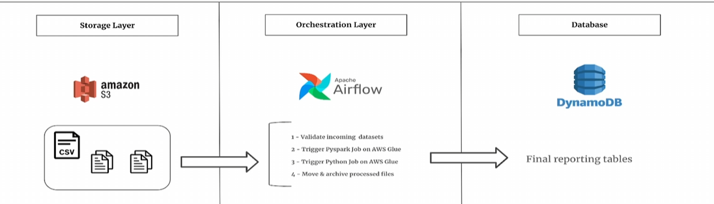

← Back to Projects
Distributed Music Streams Processing Using Airflow, Spark & DynamoDB
Executive Summary
This project implements an ETL workflow using AWS services to process music streaming data. The pipeline integrates Apache Airflow, AWS Glue (PySpark), Amazon S3, and DynamoDB for efficient data handling and storage.
Solution Architecture
The system consists of:
- Storage Layer: Music streaming data is ingested into Amazon S3.
- Processing Layer: AWS Glue (PySpark) performs batch processing.
- Database Layer: Processed data is stored in Amazon DynamoDB.
- Orchestration Layer: Apache Airflow automates workflow execution.
Data Pipeline Workflow
- Step 1: Airflow triggers data ingestion from S3.
- Step 2: AWS Glue cleans and transforms the data.
- Step 3: Transformed data is loaded into DynamoDB.
- Step 4: Processed files are archived for historical tracking.
Technologies Used
- Amazon S3 - Data storage
- Apache Airflow - Workflow orchestration
- AWS Glue - ETL processing
- Amazon DynamoDB - NoSQL database

Conclusion
This project effectively processes music streaming data, enabling real-time analytics. Future improvements include AWS Lambda for event-driven ingestion and DynamoDB Streams for real-time processing.